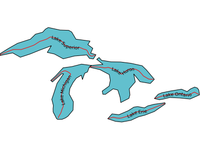
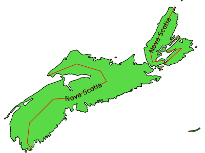
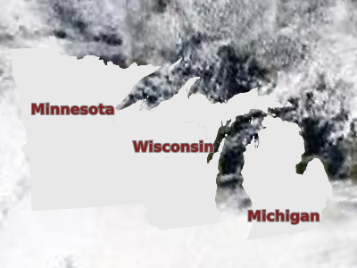

LAYER¶

- BINDVALS
New in version 6.0.
This keyword allows name value pairs to be created to bind variables in SQL statements. Variable binding prevents SQL injection by properly escaping strings and integers. Applies to PostGIS and Oracle connections only.
Example:
DATA "the_geom from (select * from province where name_e = $1) as foo using unique gid" BINDVALS "1" "Nova Scotia" END
Note
This attribute can be replaced using runtime substitution. See Run-time Substitution.
- CLASS
Signals the start of a CLASS object.
Inside a layer, only a single class will be used for the rendering of a feature. Each feature is tested against each class in the order in which they are defined in the mapfile. The first class that matches the its min/max scale constraints and its EXPRESSION check for the current feature will be used for rendering.
This can be controlled with RENDERMODE processing directive.
- CLASSGROUP [string]
Specify the class’s group that would be considered at rendering time. The CLASS object’s GROUP parameter must be used in combination with CLASSGROUP.
- CLASSITEM [attribute]
Item name in attribute table to use for class lookups.
- CLUSTER
Signals the start of a CLUSTER object.
The CLUSTER configuration option provides to combine multiple features from the layer into single (aggregated) features based on their relative positions. Supported only for POINT layers.
- COMPOSITE
Signals the start of a COMPOSITE object.
One or more COMPOSITE blocks can be used to signal that rendering should be done in a temporary image and merged onto the final map image in a final step. The options defined inside the COMPOSITE block will determine how this merging should be done (e.g. by appying opacity, composition operator, or pixel filters)
- CONNECTION [string]
Database connection string to retrieve remote data.
A PostGIS connection string is basically a regular PostgreSQL connection string, it takes the form of “user=nobody password=****** dbname=dbname host=localhost port=5432”
An Oracle connection string: user/pass[@db]
An SDE connection string consists of a hostname, instance name, database name, username and password separated by commas.
Warning
MapServer’s native SDE driver was removed for the MapServer 7.0 release (see discussion). SDE support can still be accessed through the OGR driver.
See also
Vector Data for specific connection information for various data sources.
See also
See Kernel Density Estimation (Dynamic Heatmap) for specific connection information for kernel density estimation.
Note
This attribute can be replaced using runtime substitution. See Run-time Substitution.
- CONNECTIONOPTIONS
New in version 7.6.0.
This keyword allows to define connection options expressed as key / value pairs. This is currently only implemented for CONNECTIONTYPE OGR or raster layers, to pass open options to GDAL/OGR drivers.
Example for a GeoJSON datasource to specify the FLATTEN_NESTED_ATTRIBUTES open option of the OGR GeoJSON driver.
CONNECTIONOPTIONS "FLATTEN_NESTED_ATTRIBUTES" "YES" END
- CONNECTIONTYPE [contour|kerneldensity|idw|local|ogr|oraclespatial|plugin|postgis|sde|union|uvraster|wfs|wms]
Type of connection. Default is local. See additional documentation for any other type.
See also
Vector Data for specific connection information for various data sources. See Union Layer for combining layers, added in MapServer 6.0
See also
See Kernel Density Estimation (Dynamic Heatmap) for specific connection information for kernel density estimation.
See also
See Inverse distance weighted interpolation for specific connection information for inverse distance weighted interpolation.
Note
mygis is another connectiontype, but it is deprecated; please see the MySQL section of the Vector Data document for connection details.
- DATA [filename]|[sde parameters][postgis table/column][oracle table/column]
Full filename of the spatial data to process. No file extension is necessary for shapefiles. Can be specified relative to the SHAPEPATH option from the Map Object.
If this is an SDE layer, the parameter should include the name of the layer as well as the geometry column, i.e. “mylayer,shape,myversion”.
If this is a PostGIS layer, the parameter should be in the form of “<columnname> from <tablename>”, where “columnname” is the name of the column containing the geometry objects and “tablename” is the name of the table from which the geometry data will be read.
For Oracle, use “shape FROM table” or “shape FROM (SELECT statement)” or even more complex Oracle compliant queries! Note that there are important performance impacts when using spatial subqueries however. Try using MapServer’s FILTER whenever possible instead. You can also see the SQL submitted by forcing an error, for instance by submitting a DATA parameter you know won’t work, using for example a bad column name.
In a standard use case, when PostGIS, SpatiaLite, or GeoPackage are used as data source the BBOX filter (bounding boxes intersect, && with PostGIS) is used automatically. However in some rare use case, a subquery can be very time consuming if data is really important as the final data will be filtered only in the query. In order to filter data sooner, ie before the final query, one can filter data directly in the subquery using the !BOX! variable: WHERE ST_Intersects(wkb_geometry,!BOX!).
See also
Vector Data for specific connection information for various data sources.
Note
This attribute can be replaced using runtime substitution. See Run-time Substitution.
- DEBUG [off|on|0|1|2|3|4|5]
Enables debugging of a layer in the current map.
Debugging with MapServer versions >= 5.0:
Verbose output is generated and sent to the standard error output (STDERR) or the MapServer errorfile if one is set using the “MS_ERRORFILE” environment variable. You can set the environment variable by using the CONFIG parameter at the MAP level of the mapfile, such as:
CONFIG "MS_ERRORFILE" "/ms4w/tmp/ms_error.txt"
You can also set the environment variable in Apache by adding the following to your httpd.conf:
SetEnv MS_ERRORFILE "/ms4w/tmp/ms_error.txt"
Once the environment variable is set, the DEBUG mapfile parameter can be used to control the level of debugging output. Here is a description of the possible DEBUG values:
DEBUG O or OFF - only msSetError() calls are logged to MS_ERRORFILE. No msDebug() output at all. This is the default and corresponds to the original behavior of MS_ERRORFILE in MapServer 4.x
DEBUG 1 or ON - includes all output from DEBUG 0 plus msDebug() warnings about common pitfalls, failed assertions or non-fatal error situations (e.g. missing or invalid values for some parameters, missing shapefiles in tileindex, timeout error from remote WMS/WFS servers, etc.)
DEBUG 2 - includes all output from DEBUG 1 plus notices and timing information useful for tuning mapfiles and applications
DEBUG 3 - all of DEBUG 2 plus some debug output useful in troubleshooting problems such as WMS connection URLs being called, database connection calls, etc. This is the recommended level for debugging mapfiles.
DEBUG 4 - DEBUG 3 plus even more details…
DEBUG 5 - DEBUG 4 plus any msDebug() output that might be more useful to the developers than to the users.
You can also set the debug level by using the “MS_DEBUGLEVEL” environment variable.
The DEBUG setting can also be specified for the entire map, by setting the DEBUG parameter in the MAP object.
For more details on this debugging mechanism, please see Debugging MapServer.
Debugging with MapServer versions < 5:
Verbose output is generated and sent to the standard error output (STDERR) or the MapServer logfile if one is set using the LOG parameter in the WEB object. Apache users will see timing details for drawing in Apache’s error_log file. Requires MapServer to be built with the DEBUG=MSDEBUG option (–with-debug configure option).
- DUMP [true|false]
Removed in version 8.0: Please use LAYER METADATA instead.
Switch to allow MapServer to return data in GML format. Useful when used with WMS GetFeatureInfo operations. “false” by default.
See also
- ENCODING [string]
New in version 7.0.
The encoding used for text in the layer data source. The value must be supported by ICONV (for example “LATIN1”). When ENCODING is set (and not equal to “UTF-8”), the data source text attributes will be converted to UTF-8.
Required for displaying international characters in MapServer. More information can be found in the Label Encoding document.
- EXTENT [minx] [miny] [maxx] [maxy]
The spatial extent of the data. In most cases you will not need to specify this, but it can be used to avoid the speed cost of having MapServer compute the extents of the data. An application can also possibly use this value to override the extents of the map.
FILTER [string]
This parameter allows for data specific attribute filtering that is done at the same time spatial filtering is done, but before any CLASS expressions are evaluated. The string is simply a MapServer expression:
FILTER ("[type]"='road' and [size]<2)Native filters are supported through the NATIVE_FILTER PROCESSING key:
PROCESSING 'NATIVE_FILTER=id=234'Note
Until MapServer 6, native filters could be specified as:
FILTER 'where id=234'.But this is no longer supported.
Note
This attribute can be replaced using runtime substitution. See Run-time Substitution.
- FILTERITEM [attribute]
Item to use with simple FILTER expressions. OGR and shapefiles only.
- GEOMTRANSFORM [<expression>|<Javascript file>]
New in version 6.4.
Used to indicate that the current feature will be transformed.
<expression>: Applies the given expression to the geometry.
Supported expressions:
(buffer([shape],dist)): Buffer the geometry ([shape]) using dist ground units as buffer distance. For polygons, a negative dist will produce a setback.
New in version 8.0: centerline()
(centerline([shape]): Useful for labeling polygons, creates a centered line ([shape]) using a Voronoi diagram generated by GEOS and then additional simplification. Requires GEOS >= 3.5 Centerlines can only be computed for polygon shapes.
an example showing a generated red centerline that is used to label lakes, from a polygon datasource lakes.db (and uses densify() to add more verticies to the generated red line, so it follows the lake’s shape) :
LAYER NAME "red-line" TYPE LINE CONNECTIONTYPE OGR CONNECTION "lakes.db" DATA "lakes" GEOMTRANSFORM (centerline(densify([shape], 0.1))) ... CLASS NAME "red" STYLE COLOR 255 0 0 END #style LABEL COLOR 0 0 0 FONT sans TYPE truetype SIZE 7 POSITION cc FORCE TRUE ANGLE FOLLOW END #label END #class ... END #layer
New in version 8.0: densify()
(densify([shape],tolerance): Add more verticies to the feature ([shape]). Requires a positive tolerance value. Might be useful in combination with centerline() to add more verticies to the generated labeled line.
(generalize([shape],tolerance)): simplifies a geometry ([shape]) in way comparable to FME’s ThinNoPoint algorithm. See http://trac.osgeo.org/gdal/ticket/966 for more information.
New in version 8.0: inner()
(inner([shape]): creates an inner corresponding ring from an input polygon, as a new [shape]
(simplify([shape],tolerance)): simplifies a geometry ([shape]) using the standard Douglas-Peucker algorithm.
an example showing a generated red centerline that is used to label a province, from a polygon datasource ns.db (and uses simplify() to reduce the verticies in the generated line) :
LAYER NAME "red-line" TYPE LINE STATUS ON CONNECTIONTYPE OGR CONNECTION "ns.db" DATA "ns" ... GEOMTRANSFORM (simplify((centerline([shape])), 10000)) CLASS NAME "red" STYLE COLOR 255 0 0 END #style LABEL COLOR 0 0 0 FONT sans TYPE truetype SIZE 10 POSITION AUTO MINFEATURESIZE AUTO ANGLE FOLLOW END #label END #class ... END #layer
(simplifypt([shape], tolerance)): simplifies a geometry ([shape]), ensuring that the result is a valid geometry having the same dimension and number of components as the input. tolerance must be non-negative.
(smoothsia([shape], smoothing_size, smoothing_iteration, preprocessing)): will smooth a geometry ([shape]) using the SIA algorithm
New in version 8.0: outer()
(outer([shape]): creates an outer corresponding ring from an input polygon, as a new [shape]. This might be useful when you want to ignore islands when labeling a lake.
See also
GEOMTRANSFORM - Geometry Transformations and Shape Smoothing
There is a difference between STYLE and LAYER GEOMTRANSFORM. LAYER-level will receive ground coordinates (meters, degress, etc) and STYLE-level will receive pixel coordinates. The argument to methods such as simplify() must be in the same units as the coordinates of the shapes at that point of the rendering workflow, i.e. pixels at the STYLE-level and in ground units at the LAYER-level.
LAYER NAME "my_layer" TYPE LINE STATUS DEFAULT DATA "lines.shp" GEOMTRANSFORM (simplify([shape], 10)) ## 10 ground units CLASS STYLE GEOMTRANSFORM (buffer([shape], 5) ## 5 pixels WIDTH 2 COLOR 255 0 0 END END END
The [map_cellsize] variable is available if you need to pass a pixel value at the LAYER-level.
LAYER NAME "my_layer" TYPE LINE STATUS DEFAULT DATA "lines.shp" UNITS meters # 10 * [map_cellsize] == 10 pixels converted to ground units GEOMTRANSFORM (simplify([shape], [map_cellsize]*10)) ...
To get this variable working in the math expression parser, the [map_cellsize] has to be converted into the layer ground unit. If you choose to use [map_cellsize] in your GEOMTRANSFORM expression, you must explicitly set the UNITS option in the layer.
<Javascript file>: A Javascript file that returns a new geometry. See Javascript transformation.
New in version 7.0.
LAYER ... GEOMTRANSFORM "javascript://transform.js" # relative path END
or
LAYER ... GEOMTRANSFORM "javascript:///home/user/transform.js" # absolute path END
Note
Requires V8 MapScript Support.
- GROUP [name]
Name of a group that this layer belongs to. The group name can then be reference as a regular layer name in the template files, allowing to do things like turning on and off a group of layers at once.
If a group name is present in the LAYERS parameter of a CGI request, all the layers of the group are returned (the STATUS of the LAYERs have no effect).
- HEADER [filename]
Template to use before a layer’s set of results have been sent. Multiresult query modes only.
- JOIN
Signals the start of a JOIN object.
- LABELANGLEITEM [attribute]
Removed in version 5.0: Please see the LABEL object’s ANGLE parameter instead.
For MapServer versions < 5.0, this is the item name in attribute table to use for class annotation angles. Values should be in degrees.
- LABELCACHE [on|off]
Specifies whether labels should be drawn as the features for this layer are drawn, or whether they should be cached and drawn after all layers have been drawn. Default is on. Label overlap removal, auto placement etc… are only available when the label cache is active.
- LABELITEM [attribute]
Item name in attribute table to use for class annotation (i.e. labeling).
- LABELMAXSCALEDENOM [double]
Minimum scale at which this LAYER is labeled. Scale is given as the denominator of the actual scale fraction, for example for a map at a scale of 1:24,000 use 24000. Implemented in MapServer 5.0, to replace the deprecated LABELMAXSCALE parameter. Must be greater or equal to 0.
See also
- LABELMINSCALEDENOM [double]
Maximum scale at which this LAYER is labeled. Scale is given as the denominator of the actual scale fraction, for example for a map at a scale of 1:24,000 use 24000. Implemented in MapServer 5.0, to replace the deprecated LABELMINSCALE parameter. Must be greater or equal to 0.
See also
- LABELREQUIRES [expression]
Sets context for labeling this layer, for example:
LABELREQUIRES "![orthoquads]"
means that this layer would NOT be labeled if a layer named “orthoquads” is on. The expression consists of a boolean expression based on the status of other layers, each [layer name] substring is replaced by a 0 or a 1 depending on that layer’s STATUS and then evaluated as normal. Logical operators AND and OR can be used.
- LABELSIZEITEM [attribute]
Removed in version 5.0: Please see the LABEL object’s SIZE parameter instead.
For MapServer versions < 5.0, this is the item name in attribute table to use for class annotation sizes. Values should be in pixels.
- MASK [layername]
The data from the current layer will only be rendered where it intersects features from the [layername] layer. [layername] must reference the NAME of another LAYER defined in the current mapfile. can be any kind of MapServer layer, i.e. vector or raster. If the current layer has labelling configured, then only labels who’s label-point fall inside the unmasked area will be added to the labelcache (the actual glyphs for the label may be rendered ontop of the masked-out area.
Note
Unless you want the features of [layername] to actually appear on the generated map, [layername] should usually be set to STATUS OFF.
See also
Note
This attribute can be replaced using runtime substitution. See Run-time Substitution.
- MAXFEATURES [integer]
Specifies the number of features that should be drawn for this layer in the CURRENT window. Has some interesting uses with annotation and with sorted data (i.e. lakes by area). Must be greater than 0.
- MAXGEOWIDTH [double]
New in version 5.4.0.
Maximum width, in the map’s geographic units, at which this LAYER is drawn. If MAXSCALEDENOM is also specified then MAXSCALEDENOM will be used instead. Must be greater than 0.
The width of a map in geographic units can be found by calculating the following from the extents:
[maxx] - [minx]
- MAXSCALEDENOM [double]
New in version 5.0.0: Replaced MAXSCALE.
Minimum scale at which this LAYER is drawn. Scale is given as the denominator of the actual scale fraction, for example for a map at a scale of 1:24,000 use 24000. Must be greater or equal to 0.
See also
- METADATA
This keyword allows for arbitrary data to be stored as name value pairs. This is used with OGC WMS to define things such as layer title. It can also allow more flexibility in creating templates, as anything you put in here will be accessible via template tags.
Example:
METADATA "title" "My layer title" "author" "Me!" END
Note
Runtime substitution can be used to replace metadata values, but not keys. See Run-time Substitution
- MINFEATURESIZE [integer]
Minimum feature size (in pixels) for shapes in the layer. Must be greater than 0.
- MINGEOWIDTH [double]
New in version 5.4.0.
Minimum width, in the map’s geographic units, at which this LAYER is drawn. If MINSCALEDENOM is also specified then MINSCALEDENOM will be used instead. Must be greater than 0.
The width of a map in geographic units can be found by calculating the following from the extents:
[maxx] - [minx]
- MINSCALEDENOM [double]
Maximum scale at which this LAYER is drawn. Scale is given as the denominator of the actual scale fraction, for example for a map at a scale of 1:24,000 use 24000. Implemented in MapServer 5.0, to replace the deprecated MINSCALE parameter. Must be greater or equal to 0.
See also
- NAME [string]
Short name for this layer. This name is the link between the mapfile and web interfaces that refer to this name. They must be identical. The name should be unique, unless one layer replaces another at different scales. Use the GROUP option to associate layers with each other. It is recommended that the name not contain spaces, special characters, or begin with a number (which could cause problems through interfaces such as OGC services).
Tip
It is strongly recommended that you set a NAME parameter for every LAYER.
- OFFSITE [r] [g] [b] | [hexadecimal string]
Sets the color index to treat as transparent for raster layers.
r, g and b shall be integers [0..255]. To specify black pixels, the following is used:
OFFSITE 0 0 0
hexadecimal string can be
RGB value: “#rrggbb”. To specify magenta, the following is used:
OFFSITE "#FF00FF"
RGBA value (adding translucence): “#rrggbbaa”. To specify a semi-translucent magenta, the following is used:
OFFSITE "#FF00FFCC"
OPACITY [integer|alpha]
Removed in version 8.0: Use a COMPOSITE block instead.
- PLUGIN [filename]
Additional library to load by MapServer, for this layer. This is commonly used to load specific support for Oracle and Microsoft SQL Server layers, such as:
For MapServer >=8:
CONNECTIONTYPE PLUGIN CONNECTION "username/password@hostname:port/database" PLUGIN "oci" DATA "geometrycolumn FROM schema.table USING UNIQUE column SRID 4326"
Where “oci” is an alias mapped in the global CONFIG file:
PLUGINS # new keyed approach to plugins "mssql" "C:/apps/gisinternals/bin/ms/plugins/mssql2008/msplugin_mssql2008.dll" "oci" "C:/apps/gisinternals/bin/ms/plugins/oci/msplugin_oracle.dll" "mssql_ms4w" "C:/ms4w/msplugins/mssql/msplugin_mssql2008.dll" END
For MapServer <8:
CONNECTIONTYPE PLUGIN CONNECTION "server=mysqlserver2008.com;uid=dbusername;pwd=dbpassword;database=Roads Database;Integrated Security=false" PLUGIN "C:/ms4w/msplugins/mssql/msplugin_mssql2008.dll" DATA "the_geom from roads"
- POSTLABELCACHE [true|false]
Tells MapServer to render this layer after all labels in the cache have been drawn. Useful for adding neatlines and similar elements. Default is false.
- PROCESSING [string]
Passes a processing directive to be used with this layer. The supported processing directives vary by layer type, and the underlying driver that processes them.
Note
This attribute can be replaced using runtime substitution. See Run-time Substitution.
ArcSDE Directives - All ArcSDE processing options are described in ArcSDE. Here are two examples.
PROCESSING "QUERYORDER=ATTRIBUTE" PROCESSING "OBJECTID=OBJECTID"
Attributes Directive - The ITEMS processing option allows to specify the name of attributes for inline layers or specify the subset of the attributes to be used by the layer, such as:
PROCESSING "ITEMS=itemname1,itemname2,itemname3"
Clustering - cluster object directives are described in CLUSTER
PROCESSING "CLUSTER_GET_ALL_SHAPES=ON" PROCESSING "CLUSTER_KEEP_LOCATIONS=ON" PROCESSING "CLUSTER_USE_MAP_UNITS=ON" PROCESSING "ITEMS=attribute1,attribute2,attribute3"
Connection Pooling Directive - This is where you can enable connection pooling for certain layer layer types. Connection pooling will allow MapServer to share the handle to an open database or layer connection throughout a single map draw process. Additionally, if you have FastCGI enabled, the connection handle will stay open indefinitely, or according to the options specified in the FastCGI configuration. Oracle Spatial, ArcSDE, OGR Vector Layers Through MapServer and PostGIS/PostgreSQL currently support this approach. “DEFER” enables connection pooling; “ALWAYS” will always close the connection after use, and will also not try to reuse a shared connection from the pool that might come from another layer.
PROCESSING "CLOSE_CONNECTION=DEFER"
or
PROCESSING "CLOSE_CONNECTION=ALWAYS"
Contour Directives - contour directives are described in Contour.
PROCESSING "BANDS=1" PROCESSING "CONTOUR_INTERVAL=5" PROCESSING "CONTOUR_LEVELS=100,500,1000" PROCESSING "CONTOUR_ITEM=elevation"
Kernel density radius
New in version 7.0.
Radius in pixels of the gaussian filter to apply to the bitmap array once all features have been accumulated. Higher values result in increased cpu time needed to compute the filtered data.
PROCESSING "KERNELDENSITY_RADIUS=10"
Kernel density compute borders
New in version 7.0.
A kernel of radius “r” cannot be applied to “r” pixels along the borders of the image. The default is to extend the search rectangle of the input datasource to include features “r” pixels outside of the current map extent so that the computed heatmap extends to the full extent of the resulting image. This can be deactivated when tiling if the tiling software applies a metabuffer of “r” pixels to its requests, to avoid the performance overhead of computing this extra information.
PROCESSING "KERNELDENSITY_COMPUTE_BORDERS=ON|OFF"
Kernel density normalization
New in version 7.0.
If set to “AUTO”, the created raster band will be scaled such that its intensities range from 0 to 255, in order to fully span the configured color ramp. Such behavior may not be desirable (typically for tiling) as the resulting intensity of a pixel at a given location will vary depending on the extent of the current map request. If set to a numeric value, the samples will be multiplied by the given value. It is up to the user to determine which scaling value to use to make the resulting pixels span the full 0-255 range; determining that value is mostly a process of trial and error. Pixels that fall outside the 0-255 range will be clipped to 0 or 255.
PROCESSING "KERNELDENSITY_NORMALIZATION=AUTO|numeric"
Inverse distance weight interpolation radius
New in version 8.0.
Radius in pixels of the search radius of features to take into account. Higher values result in increased cpu time needed to compute the filtered data. The default is the dimension of the image to render.
PROCESSING "IDW_RADIUS=10"
Inverse distance weight interpolation compute borders
New in version 8.0.
A kernel of radius “r” cannot be applied to “r” pixels along the borders of the image. The default is to extend the search rectangle of the input datasource to include features “r” pixels outside of the current map extent so that the computed result extends to the full extent of the resulting image. This can be deactivated when tiling if the tiling software applies a metabuffer of “r” pixels to its requests, to avoid the performance overhead of computing this extra information.
PROCESSING "IDW_COMPUTE_BORDERS=ON|OFF"
Inverse distance weight interpolation power
New in version 8.0.
Value such that 1 / distance^power is the weight applied when computing pixel values. The default is 1.0.
PROCESSING "IDW_POWER=1"
Raster colour ramping
New in version 7.0.
RANGE_COLORSPACE=RGB|HSL - The default RANGE support interpolates colors between stops in RGB space, which usually results in washed out colors. The interpolation can be done in HSL space which usually results in wanted output for heatmaps.
PROCESSING "RANGE_COLORSPACE=HSL"
Label Directive - The LABEL_NO_CLIP processing option can be used to skip clipping of shapes when determining associated label anchor points. This avoids changes in label position as extents change between map draws. It also avoids duplicate labels where features appear in multiple adjacent tiles when creating tiled maps.
PROCESSING "LABEL_NO_CLIP=True"
Line Rendering Directive - The POLYLINE_NO_CLIP processing option can be used to skip clipping of shapes when rendering styled lines (dashed or styled with symbols). This avoids changes in the line styling as extents change between map draws. It also avoids edge effects where features appear in multiple adjacent tiles when creating tiled maps.
PROCESSING "POLYLINE_NO_CLIP=True"
Class Rendering Directive
New in version 7.6.
The RENDERMODE processing option specifies how classes are selected for rendering a layer. Default value, and historic behaviour, is FIRST_MATCHING_CLASS: only the first applicable class is selected to render a feature (see CLASS description). The other available value is ALL_MATCHING_CLASSES: all applicable classes are used to render a feature, each one being used on top of the previous ones. This is the default behaviour with SLD styles.
PROCESSING "RENDERMODE=ALL_MATCHING_CLASSES"
OGR Styles Directive - This directive can be used for obtaining label styles through MapScript. For more information see the MapServer’s OGR document.
PROCESSING "GETSHAPE_STYLE_ITEMS=all"
MSSQL specific options - MSSQL_READ_WKB=TRUE - Uses WKB (Well Known Binary) format instead of native format when fetching geometries.
PROCESSING "MSSQL_READ_WKB=TRUE"
Native filter Directive
New in version 7.0.
This directive can be used to do driver specific filtering. For database connections the string is a SQL WHERE clause that is valid with respect to the underlying database.
PROCESSING "NATIVE_FILTER=id=234"
PostGIS specific options - FORCE2D=YES can be used to force 2D only geometries to be retrieved from PostGIS.
PROCESSING "FORCE2D=YES"
Vector field specific rendering options - UV_SPACING: The spacing is the distance, in pixels, between arrows to be displayed in the vector field. Default is 32. UV_SIZE_SCALE: Used to convert the vector lengths (magnitude) of the raster to pixels for a better rendering. Default is 1.
PROCESSING "UV_SPACING=40" PROCESSING "UV_SIZE_SCALE=0.2"
AGG renderer tweaking - This directive can be used for setting the linear gamma to be used when rendering polygon features. The default value of 0.75 (that can be overridden at the OUTPUTFORMAT level) can be set to a lower value to limit/remove the faint outlines that appear between adjacent polygons. A value of 0.5 is usually good enough.
PROCESSING "GAMMA=0.5"
Raster Directives - All raster processing options are described in Raster Data. Here we see the SCALE and BANDs directives used to autoscale raster data and alter the band mapping.
PROCESSING "SCALE=AUTO" PROCESSING "BANDS=3,2,1"
Union layer Directives - The following processing options can be used with the union layers: UNION_STATUS_CHECK (TRUE or FALSE) - controls whether the status of the source layers should be checked and the invisible layers (STATUS=OFF) should be skipped. Default value is FALSE. UNION_SCALE_CHECK (TRUE or FALSE) - controls whether the scale range of the source layers should be checked and the invisible layers (falling outside of the scale range and zoom range) should be skipped. Default value is TRUE. UNION_SRCLAYER_CLOSE_CONNECTION - override the connection pool setting of the source layers. By introducing this setting we alter the current behaviour which is equivalent to: “UNION_SRCLAYER_CLOSE_CONNECTION=ALWAYS”
PROCESSING "UNION_STATUS_CHECK=FALSE" PROCESSING "UNION_SCALE_CHECK=TRUE" PROCESSING "UNION_SRCLAYER_CLOSE_CONNECTION=ALWAYS"
- PROJECTION
Signals the start of a PROJECTION object.
- REQUIRES [expression]
Sets context for displaying this layer (see LABELREQUIRES).
An example could be that you have a states_poly layer that you want turned off whenever a modis layer is turned on; in this case you would set the REQUIRES parameter in the states_poly layer such as:
LAYER NAME "states_poly" TYPE POLYGON REQUIRES "![modis]" ...
with REQUIRES:
without REQUIRES
The REQUIRES setting should affect all modes (confirmed through testing is: mode=map, WMS GetMap, MapScript, and map2img commandline).
- SCALETOKEN
New in version 6.4.
Signals the start of a SCALETOKEN object. Allows scale dependent string substitutions. See MS RFC 86: Scale-dependant String Substitutions.
LAYER ... SCALETOKEN NAME "%pri%" VALUES "0" "1" "1000" "2" "10000" "3" END # VALUES END # SCALETOKEN # data from a specific table: DATA "geom from mytable_%pri%" # data from a specific Shapefile format dataset: DATA "/path/to/roads_%pri%.shp" # data from a specific column in the table: DATA "geom_%pri% from roads" # filtering: DATA "geom_%pri% from (select * from roads where pri > %pri%) as foo" CLASS ... END # CLASS END # LAYER
In the previous example, %pri% would be replaced by:
“1” for scale denominators smaller than 1,000, giving:
DATA "geom from mytable_1" DATA "/path/to/roads_1.shp" DATA "geom_1 from roads" DATA "geom_1 from (select * from roads where pri > 1) as foo"
“2” for scale denominators between 1,000 and 10,000:
DATA "geom from mytable_2" DATA "/path/to/roads_2.shp" DATA "geom_2 from roads" DATA "geom_2 from (select * from roads where pri > 2) as foo"
“3” for scale denominators larger than 10,000:
DATA "geom from mytable_3" DATA "/path/to/roads_3.shp" DATA "geom_3 from roads" DATA "geom_3 from (select * from roads where pri > 3) as foo"
- SIZEUNITS [feet|inches|kilometers|meters|miles|nauticalmiles|pixels]
Sets the unit of STYLE object SIZE values (default is pixels). Useful for simulating buffering. nauticalmiles was added in MapServer 5.6.
- STATUS [on|off|default]
Sets the current status of the layer. Often modified by MapServer itself. Default turns the layer on permanently.
Note
In CGI mode, layers with STATUS DEFAULT cannot be turned off using normal mechanisms. It is recommended to set layers to STATUS DEFAULT while debugging a problem, but set them back to ON/OFF in normal use.
Note
For WMS, layers in the server mapfile with STATUS DEFAULT are always sent to the client.
Note
The STATUS of the individual layers of a GROUP has no effect when the group name is present in the LAYERS parameter of a CGI request - all the layers of the group will be returned.
- STYLEITEM [<attribute>|auto|<javascript file>]
Styling based on attributes or generated with Javascript
<attribute>: Item to use for feature specific styling. The style information may be represented by a separate attribute (style string) attached to the feature. MapServer supports the following style string representations:
MapServer STYLE definition - The style string can be represented as a MapServer STYLE block according to the following example:
STYLE BACKGROUNDCOLOR 128 0 0 COLOR 0 0 208 END
MapServer CLASS definition - By specifying the entire CLASS instead of a single style allows to use further options (like setting expressions, label attributes, multiple styles) on a per feature basis.
OGR Style String - MapServer support rendering the OGR style string format according to the OGR - Feature Style Specification documentation. Currently only a few data sources support storing the styles along with the features (like MapInfo, AutoCAD DXF, Microstation DGN), however those styles can easily be transferred to many other data sources as a separate attribute by using the ogr2ogr command line tool as follows:
ogr2ogr -sql "select *, OGR_STYLE from srclayer" "dstlayer" "srclayer"
AUTO: The value: AUTO can be used for automatic styling.
Automatic styling can be provided by the driver. Currently, only the OGR driver supports automatic styling.
When used for a Union Layer, the styles from the source layers will be used.
<Javascript file>:
New in version 6.6.
A Javascript file that returns a new string containing either a STYLE definition or a CLASS definition with one or multiple styles. See STYLEITEM Javascript.
LAYER ... STYLEITEM "javascript://myscript.js" # relative path CLASS END END
or
LAYER ... STYLEITEM "javascript:///home/user/myscript.js" # absolute path CLASS END END
Note
Requires V8 MapScript Support.
- SYMBOLSCALEDENOM [double]
The scale at which symbols and/or text appear full size. This allows for dynamic scaling of objects based on the scale of the map. If not set then this layer will always appear at the same size. Scaling only takes place within the limits of MINSIZE and MAXSIZE as described above. Scale is given as the denominator of the actual scale fraction, for example for a map at a scale of 1:24,000 use 24000. Implemented in MapServer 5.0, to replace the deprecated SYMBOLSCALE parameter. Must be greater or equal to 1.
See also
- TEMPLATE [file|url]
Used as a global alternative to CLASS TEMPLATE. See Templating for more info.
- TILEINDEX [filename|layername]
Name of the tileindex file or layer. A tileindex is similar to an ArcInfo library index. The tileindex contains polygon features for each tile. The item that contains the location of the tiled data is given using the TILEITEM parameter. When a file is used as the tileindex for shapefile or raster layers, the tileindex should be a shapefile. For CONNECTIONTYPE OGR layers, any OGR supported datasource can be a tileindex. Normally the location should contain the path to the tile file relative to the shapepath, not relative to the tileindex itself. If the DATA parameter contains a value then it is added to the end of the location. When a tileindex layer is used, it works similarly to directly referring to a file, but any supported feature source can be used (ie. postgres, oracle).
Note
All files in the tileindex should have the same coordinate system, and for vector files the same set of attributes in the same order.
Note
Starting with MapServer 6.4 for raster layers and MapServer 7.2 for vector layers, tileindexes with tiles of different projections can be used. For that, the TILESRS parameter must be specified.
Note
This attribute can be replaced using runtime substitution. See Run-time Substitution.
- TILEITEM [attribute]
Item that contains the location of an individual tile, default is “location”.
- TILESRS [attribute]
Name of the attribute that contains the SRS of an individual tile. That SRS can be expressed in WKT format, as an EPSG:XXXX code or as a PROJ string. If the tileindex contains rasters in different projections, this option must be specified. If the tileindex has been generated with gdaltindex (GDAL >= 2.0) or ogrtindex (GDAL >= 2.2), the value of TILESRS is the value of the -src_srs_name option of gdaltindex/ogrtindex. See Tileindexes with tiles in different projections
Note
This option is currently available only on raster layers.
- TOLERANCE [double]
Sensitivity for point based queries (i.e. via mouse and/or map coordinates). Given in TOLERANCEUNITS. If the layer is a POINT or a LINE, the default is 3. For all other layer types, the default is 0. To restrict polygon searches so that the point must occur in the polygon set the tolerance to zero. This setting does not apply to WFS GetFeature operations.
- TOLERANCEUNITS [pixels|feet|inches|kilometers|meters|miles|nauticalmiles|dd]
Units of the TOLERANCE value. Default is pixels. Nauticalmiles was added in MapServer 5.6.
- TRANSFORM [true|false] | [ul|uc|ur|cl|cc|cr|ll|lc|lr]
Tells MapServer whether or not a particular layer needs to be transformed from some coordinate system to image coordinates. Default is true. This allows you to create shapefiles in image/graphics coordinates and therefore have features that will always be displayed in the same location on every map. Ideal for placing logos or text in maps. Remember that the graphics coordinate system has an origin in the upper left hand corner of the image, contrary to most map coordinate systems.
Version 4.10 introduces the ability to define features with coordinates given in pixels (or percentages, see UNITS), most often inline features, relative to something other than the UL corner of an image. That is what ‘TRANSFORM FALSE’ means. By setting an alternative origin it allows you to anchor something like a copyright statement to another portion of the image in a way that is independent of image size.
TRANSPARENCY [integer|alpha]
Removed in version 8.0: Use COMPOSITE instead.
- TYPE [chart|circle|line|point|polygon|raster|query]
Specifies how the data should be drawn. Need not be the same as the shapefile type. For example, a polygon shapefile may be drawn as a point layer, but a point shapefile may not be drawn as a polygon layer. Common sense rules.
In order to differentiate between POLYGONs and POLYLINEs (which do not exist as a type), simply respectively use or omit the COLOR keyword when classifying. If you use it, it’s a polygon with a fill color, otherwise it’s a polyline with only an OUTLINECOLOR.
A circle must be defined by a a minimum bounding rectangle. That is, two points that define the smallest square that can contain it. These two points are the two opposite corners of said box. The following is an example using inline points to draw a circle:
LAYER NAME 'inline_circles' TYPE CIRCLE STATUS ON FEATURE POINTS 74.01 -53.8 110.7 -22.16 END END CLASS STYLE COLOR 0 0 255 END END END
TYPE query means the layer can be queried but not drawn.
Note
TYPE annotation has been deprecated since version 6.2. Identical functionality can be obtained by adding LABEL level STYLE blocks, and do not require loading the datasets twice in two different layers as was the case with layers of TYPE annotation.
See also
The Dynamic Charting HowTo for TYPE chart.
- UNITS [dd|feet|inches|kilometers|meters|miles|nauticalmiles|percentages|pixels]
Units of the layer. percentages (in this case a value between 0 and 1) was added in MapServer 4.10 and is mostly geared for inline features. nauticalmiles was added in MapServer 5.6.
- UTFDATA [string]
New in version 7.0.
A UTFGrid JSON template. MapServer expression syntax (expressionObj). If no UTFDATA is provided, no data beyond the UTFITEM values will be exposed. If UTFITEM is set, the UTFDATA expose those so that keys and data can be connected. See MS RFC 93: UTF Grid Support and UTFGrid Output.
UTFDATA "{\"id\":\"[fid]\", \"name\":\"[name]\", \"area\":\"[area]\"}"
- UTFITEM [string]
New in version 7.0.
The attribute to use as the ID for the UTFGrid. If a UTFITEM is not set, the sequential id (based on rendering order) is being used. If UTFITEM is set, the UTFDATA expose those so that keys and data can be connected. See MS RFC 93: UTF Grid Support and UTFGrid Output.
UTFITEM "fid"
- VALIDATION
Signals the start of a VALIDATION block.
As of MapServer 5.4.0, VALIDATION blocks are the preferred mechanism for specifying validation patterns for CGI param runtime substitutions. See Run-time Substitution.